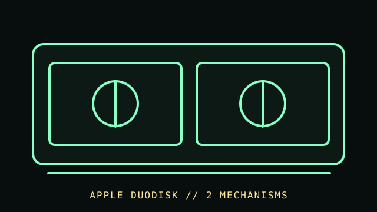

[ FLOPPY DRIVES // IDENTIFIED MODEL ]
Apple DuoDisk Drive
Apple DuoDisk is a paired 5.25-inch disk drive assembly for supported Apple II systems. The dual-drive enclosure and Apple controller/cable combination define compatibility; it is not two bare PC floppy drives.

MODEL IDENTIFICATION: Apple DuoDisk; record enclosure/model markings, controller card and cable, and the Apple service-manual revision. This record keeps variant-dependent claims qualified; verify the physical unit and applicable manual before connecting, servicing, or formatting media.
Recorded specifications
| Catalog model | Apple DuoDisk Drive |
|---|---|
| Device type | External dual 5.25-inch Apple II disk drive assembly |
| Interface / connector | Apple II controller-card and DuoDisk cable/interface; host card and Apple system configuration must match Apple documentation. |
| Media / formats | 5.25-inch Apple II floppy disks. DOS version, controller, disk encoding, and software determine format; PC capacities or FAT compatibility are not implied. |
| Revision caution | Match full model code, board/ROM/firmware revision, connector, cable, and documentation edition. Family-level ratings and host claims do not automatically apply to every unit. |
Host-controller and format compatibility
- Use with a supported Apple II and the controller/cable specified in the DuoDisk owner documentation. Connector appearance alone does not establish fit.
- Apple IIgs system configuration and startup support have specific limitations; check the Apple service/owner reference and host ROM/software before relying on either drive.
- DuoDisk houses two mechanisms but remains a system-level Apple peripheral; do not substitute PC 34-pin mechanisms without a validated conversion.
Preservation and safe cleaning
Power down the Apple host and disconnect the controller cable before inspection. Do not insert media with mold, creases, or coating damage. Clean only as directed by Apple service procedures for the mechanism; do not touch heads or use solvents on disk media.
For a disk acquisition, record the physical media label and condition, drive/model/revision, controller, host, software/firmware, settings, and any errors. Keep original media and raw captures/images unchanged; checksum verified copies and document conversions as derivatives.
Primary manuals & standards/archive references
- Apple DuoDisk Owner’s Manual — Internet ArchiveArchived Apple owner manual; verify it corresponds to the DuoDisk unit and controller configuration.
- Apple Disk II technical procedures — Internet ArchiveApple service material for Apple II floppy systems; DuoDisk-specific wiring takes precedence.
- Apple IIgs: DuoDisk Drive-To-Use-It — Apple Tech Info Library archiveArchived Apple compatibility notice for the IIgs host configuration.
Source scope is stated per link. Prefer the matching manufacturer manual and revision over family summaries. Capacities and recording modes are omitted when not supported for the exact model and format.